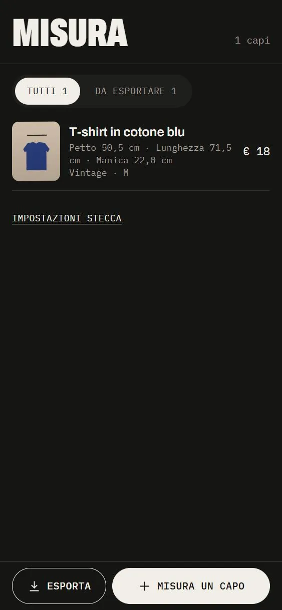
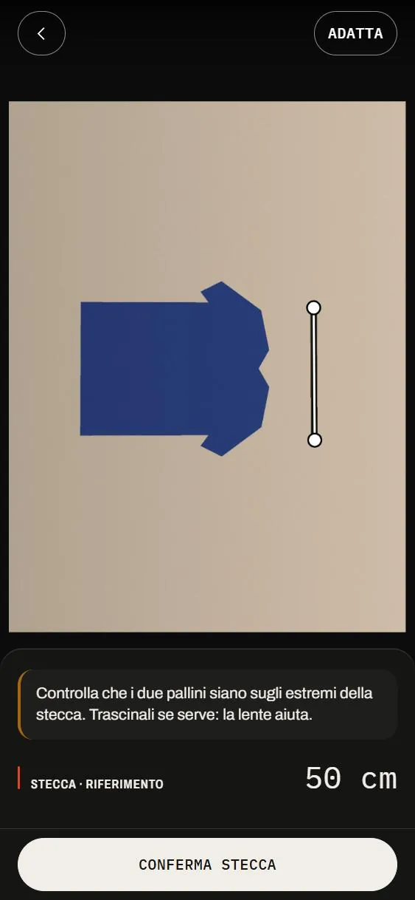
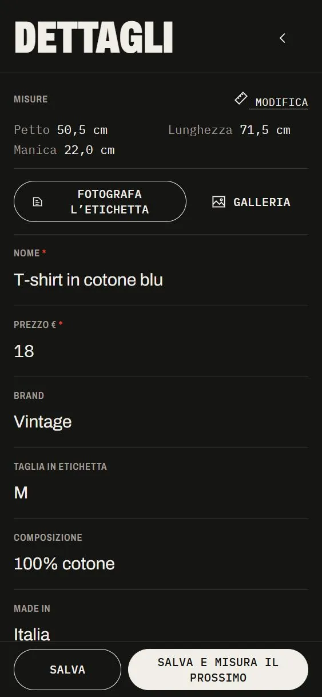
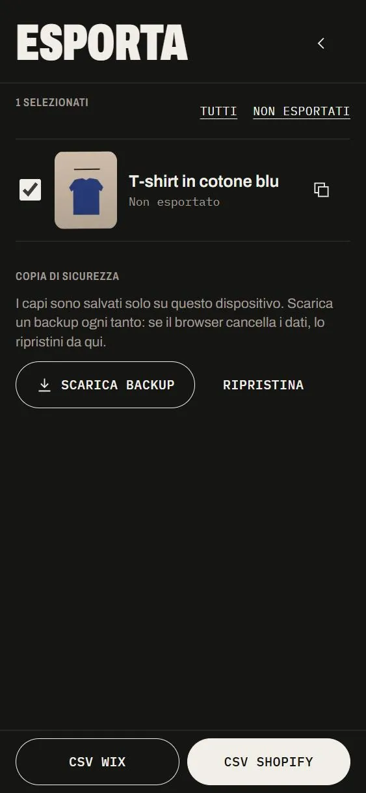
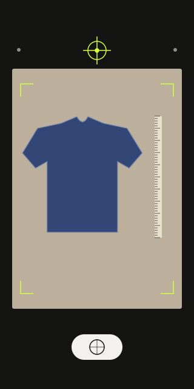
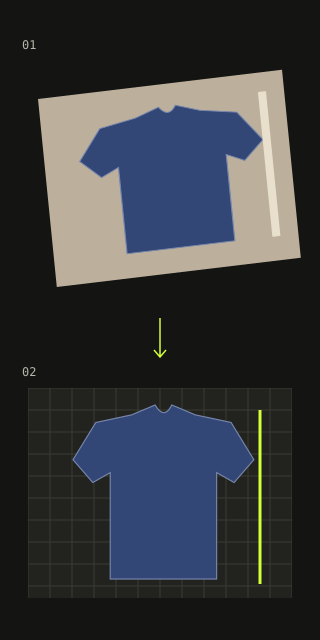
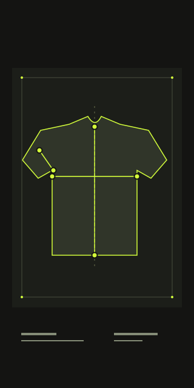

MISURA
Un’app per telefono che misura un capo d’abbigliamento da una sola foto.
È pensata per i negozi vintage e second-hand, dove ogni capo è un pezzo unico e va misurato a mano prima di metterlo in vendita online. Si stende il capo, gli si appoggia accanto una stecca da 50 cm e si scatta: Misura usa la stecca come riferimento e calcola in centimetri le misure tipiche di quel capo, ognuna con il suo margine d’errore.
Il negoziante controlla le misure, le corregge con il dito se serve, aggiunge brand e taglia (anche fotografando l’etichetta) ed esporta tutto in un file pronto per Shopify o Wix. Funziona nel browser del telefono, anche offline: niente account e niente app da installare.
Repository privato
Si può misurare un capo con una foto?
Misurare ogni capo con il metro, uno alla volta, rallenta la messa in vendita. Volevo capire se una foto con un riferimento di lunghezza noto può fare lo stesso lavoro, con una precisione dichiarata.
Come Forma, l’ho costruita con agenti AI (Claude Code) facendo da architetto e revisore: prima una specifica scritta, poi passi piccoli, ognuno rivisto e coperto da test su foto sintetiche. Tutto gira sul telefono: nessun server riceve le foto.
In funzione — due video brevi
Registrati sull’app, con una foto di provaL'app — dallo scatto all’annuncio
Cinque passi · telefono, anche offline
S.01 Il catalogo
Il catalogo raccoglie i capi misurati con foto, misure principali, marca, taglia e prezzo. Il filtro «Da esportare» mostra quelli non ancora pubblicati. Da questa schermata si può aggiungere un nuovo capo o esportare quelli selezionati.

S.02 Lo scatto e la stecca
Si stende il capo accanto a una stecca da 50 cm. Una livella a bolla aiuta a tenere il telefono in piano: lo scatto è automatico quando è allineato. L’app individua gli estremi della stecca; una lente permette di correggerne la posizione con precisione.

S.03 Le misure
L’app corregge l’inclinazione della foto, separa il capo dallo sfondo e ne riconosce l’orientamento. Propone i punti di misura per la categoria scelta — top, giacca, pantalone, gonna o vestito — e calcola le misure in centimetri con il relativo margine d’errore. I punti si possono spostare e il pulsante + permette di aggiungere altre misure.

S.04 I dettagli
Per ogni capo si registrano nome, prezzo, marca, taglia, composizione, paese di produzione e condizioni. Fotografando l’etichetta, il riconoscimento del testo sul telefono compila i campi disponibili. «Salva e misura il prossimo» permette di passare subito a un altro capo.

S.05 L’esportazione
I capi selezionati si esportano in un file CSV per Shopify o Wix, pronto per l’importazione nel negozio online. Si può anche copiare il testo dell’annuncio. Una copia di sicurezza permette di salvare e ripristinare il catalogo, che resta sul telefono.
Il motore — dalla foto al centimetro
TypeScript puro · in un Web WorkerUno scatto. Sei passaggi. Tutto sul telefono.
Segui una foto dal tavolo al catalogo. Il browser gestisce lo scatto e i controlli, un Web Worker esegue l’analisi sullo stesso dispositivo, il catalogo conserva il risultato in locale.



La stecca dà il rapporto tra pixel e centimetri.
Il Web Worker lavora in un thread separato dello stesso browser: l’interfaccia resta utilizzabile mentre la foto viene analizzata. Dopo il primo caricamento, l’app può funzionare anche offline.
Dimostrazione del flusso · schermate reali e schemi esplicativi · questa pagina non analizza fotografie
Dentro il motore: dettagli e lettura dell’etichetta
- 01
La stecca
Un listello da 50 cm accanto al capo: l’app lo trova da sola, come la forma più lunga e sottile della foto, e i suoi due estremi danno la scala.
- 02
L’inclinazione
I sensori del telefono e la convergenza dei bordi della stecca nella foto permettono di stimare l’inclinazione dello scatto. L’app usa questi dati per correggere la prospettiva.
- 03
Il capo
L’app separa il capo dallo sfondo e ne riconosce l’orientamento attraverso l’asse di simmetria, lo scollo e le gambe.
- 04
Le misure
Per ogni categoria, l’app propone i punti di misura — petto, lunghezza, manica, vita e cavallo. Si possono correggere trascinandoli, con l’aiuto di una lente.
- 05
Il margine
Ogni misura è accompagnata da una stima dell’incertezza in centimetri, calcolata in base alla qualità dello scatto. L’app segnala eventuali differenze tra i dati della foto e quelli dei sensori.
- 06
L’etichetta
Una foto dell’etichetta, letta sul telefono, compila taglia, composizione e paese di produzione.
Privacy — le foto restano sul telefono
Nessun server · nessun account- Le foto vengono elaborate nel browser del telefono, in un Web Worker. Non vengono inviate a un server.
- Prima del salvataggio o dell’esportazione, l’app rimuove i metadati della foto, comprese le coordinate GPS.
- Il catalogo è salvato sul dispositivo in IndexedDB. Una copia di sicurezza permette di esportarlo e ripristinarlo.
- Il riconoscimento del testo dell’etichetta avviene sul dispositivo. I file necessari vengono caricati dallo stesso dominio dell’app.
- I CSV sono protetti dalle formule nascoste nelle celle; la pagina ha una Content Security Policy restrittiva e nessuno script esterno.
Architettura — moduli puri, testati uno per uno
React · TypeScript · PWAsrc/uiInterfaccia React: scatto con livella, editor touch con lente, catalogo, esportazioneworker/analyzeAnalisi in un thread separato, per mantenere reattiva l’interfaccialib/stick · tilt · cameraStecca, inclinazione da sensori e da foto, modello della fotocamera e del grandangololib/rectify · segmentation · orientRaddrizzamento, separazione del capo dallo sfondo, verso del capolib/garments · measureMisure per categoria, punti proposti, incertezza in centimetrilib/catalog · export · labelCatalogo in IndexedDB, CSV Shopify e Wix, backup, lettura dell’etichetta
- React 19
- TypeScript
- Vite
- PWA
- Web Worker
- IndexedDB
- Tesseract.js
- Vitest
- Claude Code